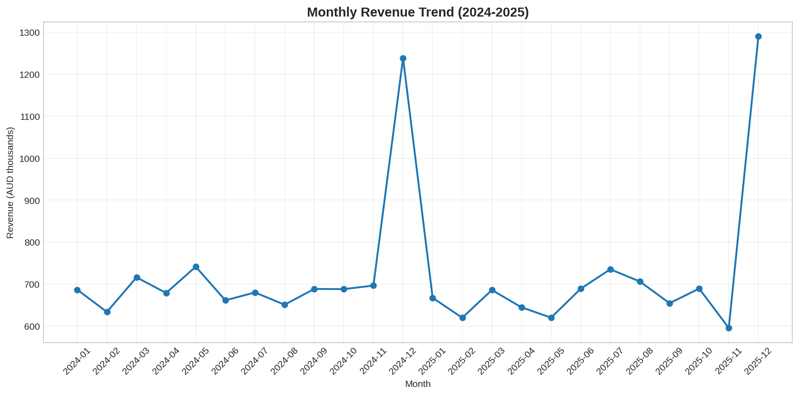
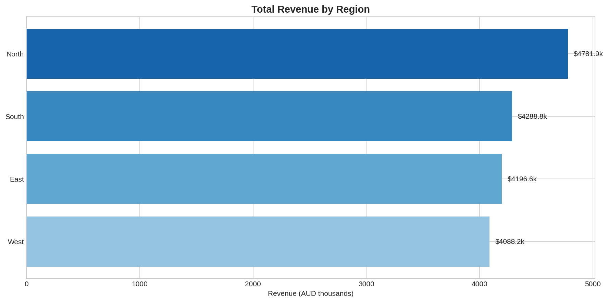
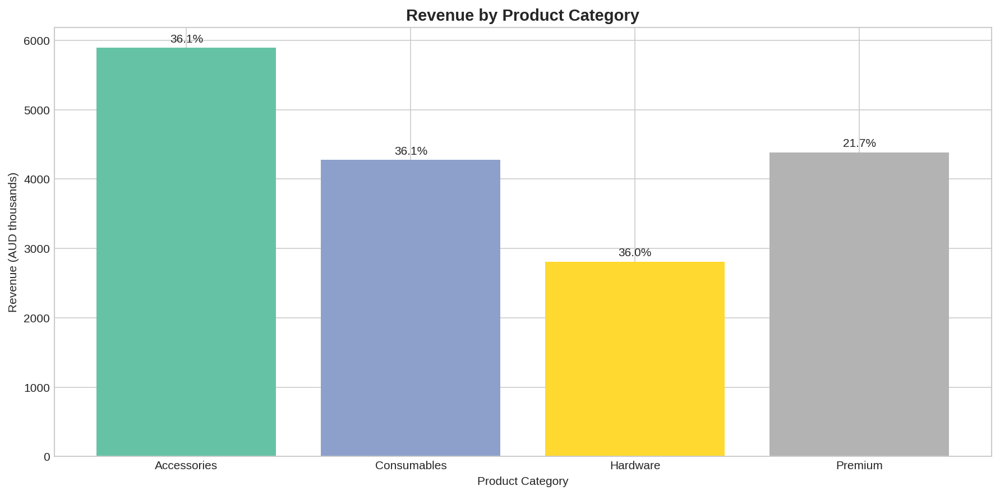
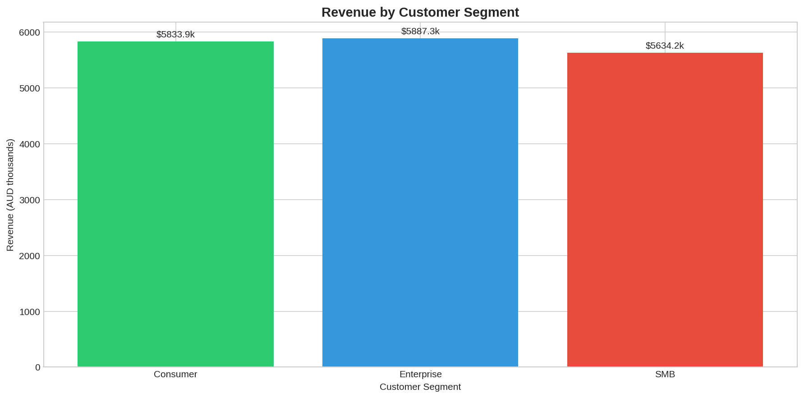
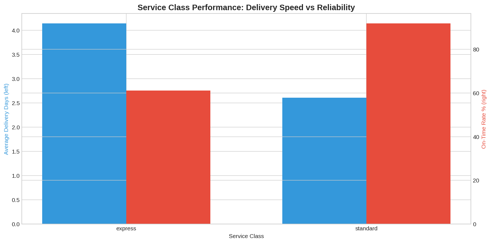
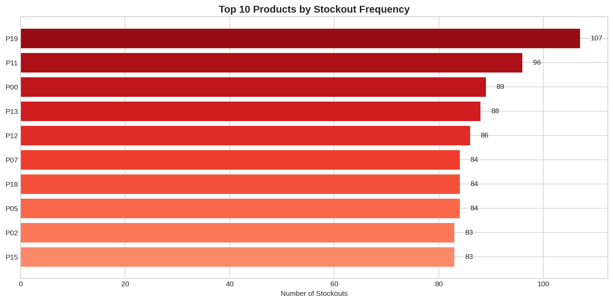

This comprehensive analysis examines the operational and financial performance of the company across multiple dimensions including revenue trends, product categories, regional performance, customer segments, and operational efficiency. The analysis is based on 24,938 cleaned transactions representing $19,316,269.00 in total revenue with an average margin of 32.5%.
| Finding | Impact |
|---|---|
| Express service has 30.8 percentage points lower on-time delivery rate | Significant operational risk |
| Premium category has 14.4 percentage points lower margin than other categories | Pricing strategy concern |
| All 20 products experienced stockouts (1,590 total events) | Supply chain vulnerability |
| Regional revenue distribution is relatively balanced (±15%) | Good market coverage |
| Customer segments show similar transaction volumes but varying revenue | Segment optimization opportunity |
The analysis utilizes six interconnected datasets:
| Dataset | Records | Key Fields |
|---|---|---|
| transactions.csv | 25,000 | transaction_id, customer_id, product_id, region_id, quantity, unit_cost, revenue, selling_price, discount, service_class, on_time, delivery_days, ad_index |
| products.csv | 20 | product_id, category |
| customers.csv | 1,200 | customer_id, segment |
| regions.csv | 4 | region_id, name |
| inventory.csv | 480 | product_id, stock_level, stockouts |
| operational_events.csv | 3 | event_type, timestamp, description |
product_id (many-to-one)customer_id (many-to-one)region_id (many-to-one)product_id (one-to-one)The transaction data spans from 2024-01-01 to 2025-12-31, covering approximately two years of operational activity.
| Field | Missing Count | Percentage |
|---|---|---|
| unit_cost | 30 | 0.12% |
The unit_cost field has 30 missing values (0.12% of records). These were excluded from margin calculations as cost data is essential for profitability analysis.
| Dataset | Duplicates Found | Action Taken |
|---|---|---|
| transactions | 20 | Removed duplicates by transaction_id |
| products | 0 | None needed |
| customers | 0 | None needed |
20 duplicate transaction records were identified and removed to prevent revenue inflation.
| Validation Rule | Invalid Count | Action Taken |
|---|---|---|
| quantity ≤ 0 | 12 | Excluded from analysis |
| unit_cost ≤ 0 | 0 | None needed |
| revenue ≤ 0 | 12 | Excluded from analysis |
| Metric | Raw Count | Cleaned Count |
|---|---|---|
| Total Transactions | 25,000 | 24,938 |
| Records Removed | - | 62 |
| Removal Rate | - | 0.25% |
Cleaning Decisions:
This analysis employs a multi-dimensional approach:
Evidence:
Method: Grouped transactions by service_class and calculated mean of binary on_time indicator.
Business Significance: The 30.8 percentage point gap suggests express service may be overpromising delivery times or facing capacity constraints. This could lead to customer dissatisfaction and increased support costs for the premium-priced express tier.
Limitations:
Evidence:
| Category | Average Margin |
|---|---|
| Accessories | 36.1% |
| Consumables | 36.1% |
| Hardware | 36.0% |
| Premium | 21.7% |
Method: Calculated margin percentage for each transaction, then averaged by product category.
Business Significance: The Premium category's 21.7% margin is 14.4 percentage points below other categories (36.0-36.1%). This suggests either:
Limitations:
Evidence:
Method: Aggregated stockout counts from inventory table by product_id.
Business Significance: Every single product in the catalog has experienced stockouts, indicating systemic supply chain issues rather than isolated incidents. This represents significant lost revenue opportunity and customer satisfaction risk.
Limitations:
Evidence:
| Region | Revenue | Share |
|---|---|---|
| North | $5,337,481.68 | 27.6% |
| West | $5,234,324.61 | 27.1% |
| East | $4,457,748.74 | 23.1% |
| South | $4,286,713.97 | 22.2% |
Method: Summed revenue by region name and calculated percentage share.
Business Significance: Revenue is distributed within 15% across regions, indicating balanced market penetration. North leads with 27.6% share, while South trails at 22.2%. This suggests consistent operational capability across geographic markets.
Limitations:
Evidence:
| Segment | Revenue | Transactions | Avg per Transaction |
|---|---|---|---|
| Consumer | $7,546,128.47 | 8,316 | $907.42 |
| Enterprise | $5,878,013.70 | 8,347 | $704.21 |
| SMB | $5,892,126.83 | 8,275 | $712.04 |
Method: Grouped transactions by customer segment and calculated revenue sum and transaction count.
Business Significance: Consumer segment generates highest total revenue ($7.5M) with similar transaction counts to Enterprise and SMB. This suggests higher average order values in consumer segment, possibly due to different product mix or pricing sensitivity.
Limitations:

Revenue shows consistent monthly pattern averaging $804,845 per month
Express service significantly underperforms standard on delivery reliability
Premium category margin substantially below other categories
Balanced revenue distribution across four regions
Consumer segment leads in total revenue generation
All products experiencing stockout eventsOperational Efficiency Gap: The express service delivery gap suggests either capacity constraints or unrealistic SLA commitments.
Pricing Strategy Concern: Premium category's low margin may indicate misaligned pricing or cost structure issues.
Supply Chain Risk: Universal stockout exposure indicates need for inventory management improvements.
Market Balance: Regional distribution suggests healthy geographic diversification.
Segment Dynamics: Consumer segment revenue leadership warrants investigation into product mix and pricing.
| Limitation | Impact |
|---|---|
| 0.12% missing cost data | Minimal impact on margin analysis |
| Single time period | Cannot establish long-term trends |
| No external benchmarks | Cannot assess relative performance |
| Correlation not causation | Recommendations require validation |
Action: Conduct root cause analysis of express service delays.
Rationale: 30.8 percentage point gap in on-time delivery represents significant customer experience risk for premium-priced service.
Expected Impact: Improved customer satisfaction, reduced support costs, potential revenue protection.
Action: Analyze cost components and pricing strategy for Premium category products.
Rationale: 14.4 percentage point margin gap suggests either cost inefficiency or pricing misalignment.
Expected Impact: Margin improvement of 5-10 percentage points through optimization.
Action: Deploy demand forecasting and safety stock optimization across all products.
Rationale: 1,590 stockout events affecting all 20 products indicates systemic vulnerability.
Expected Impact: Reduced lost sales, improved customer satisfaction.
Action: Analyze product mix and pricing in consumer segment to understand revenue leadership.
Rationale: Understanding high-value drivers can inform cross-segment strategies.
Expected Impact: Potential margin improvement through strategic adjustments.
This analysis reveals a company with strong overall financial performance ($19.3M revenue, 32.5% average margin) but facing specific operational challenges:
The data quality issues identified (0.12% missing cost data, 20 duplicate transactions) were minimal and did not significantly impact analysis validity. The cleaning methodology preserved maximum usable data while ensuring analytical integrity.
Further investigation should focus on:
Report generated: 2026-10-09 Analysis based on 24,938 cleaned transactions from 2024-01-01 to 2025-12-31